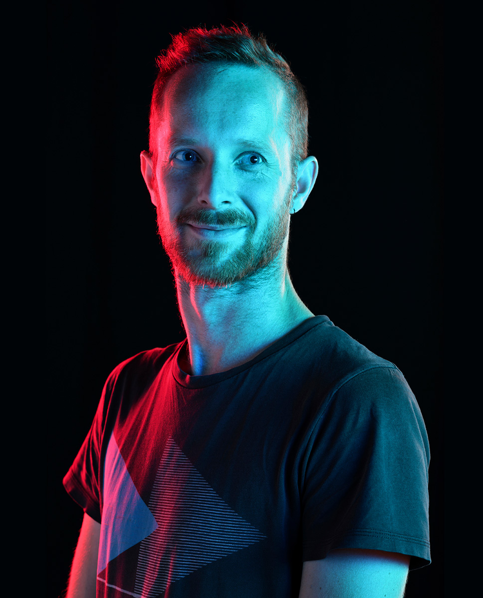

I'm Dries Delaey. Designer & Developer. Information analyst. I strive to help clients build digital products that just work. Wether it's a website, native app, mailing campaign or online ad. I try to find creative solutions, iterating between visual interface and functional prototyping. I run more than I blog.

Shot by Jolien Chielens with dashing lighting in the studio. Thanks Jolien!
Veel plaatjes schiet ik niet, maar deze bleef wel plakken. En gezien die nu al een jaar of meer op de achtergrond van mijn macbook prijkt, dacht ik ze hier even te vereeuwigen. Het heeft een zeker stranger things gehalte. Ik nam ze tijdens het Kunstenfestival Watou in 2018 - dat loopt steeds van juni tot september in het gelijknamige dorpje nabij de Franse grens. Met een focus op beeldende kunst, poëzie en illustratie: would recommend, ook met kinderen.
Als designer stuur je je carrière bewust - hopelijk - of ook onbewust een richting uit, dat wil zeggen keuzes maken. Wil je meer focus op frontend-development, of toch liever ux? Niet altijd evident, zeker niet als je het allemaal graag doet, van strategie & copy tot visual design. Maar daar houdt het niet op, ikzelf leer ook heel graag collega's dingen bij. Ik streef er zelfs naar om de rol van mentor op mij te nemen (arme designers die mijn slechte gewoontes hopelijk niet overnemen ;) - om daar beter in te worden ga ik naar Leading Design Conf. Lees meer op Medium wat ik daarvan verwacht.
Een eind geleden ben ik gestart met lopen. Dat bevalt me best, zoeken naar het evenwicht tussen natuur en de stad. Ik voel me bevoorrecht om op loopafstand van het strand te wonen, maar een lunchrun doorheen de stad kan me evengoed bekoren. Lees verder